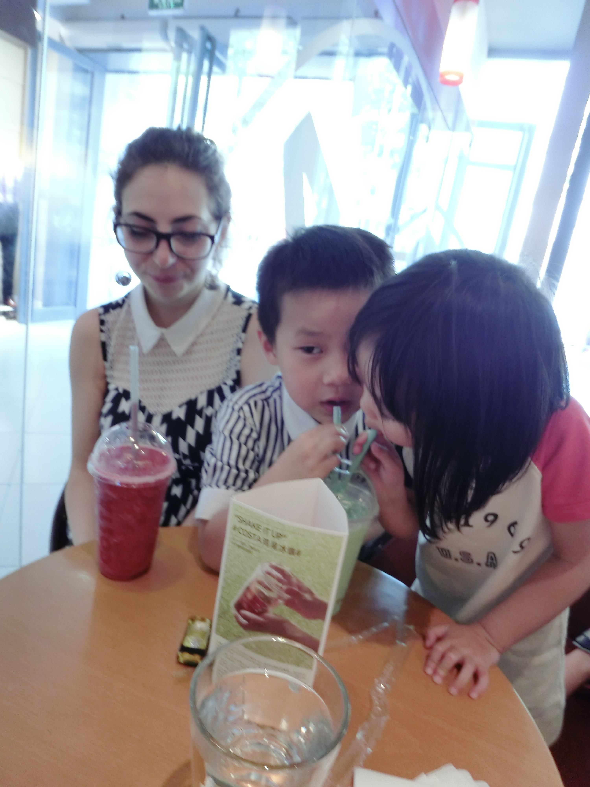

互惠动态
|
|
一个美国留学生的忠告：如何与老外有效交流
中国人在学习英语上为何花的时间最长，效果却最差？这与学习和应用英语方面存在重大误区有关，一是长期的“填鸭式的”教育方法，使很多人认为学英语是为了考试，其英语实际水平可想而知；二是误认为英语不过是由“发音、语法、句子和词汇”组成的。认为只要学习“发音、语法、句子和词汇”就能学好英语。事实上，如果以达到有效交流为目的，比英语的发音、语法、句子最重要的部分，但被国内学习和使用英语的人忽略的是：表达语言所应用的、符合英语文化和习俗的正确方式、方法和内容。
没有目标的船只永远在海上漂流，而学习英语的目的多种多样，但学口语的目的，只有一个：为了能与Native English speakers进行“有效的交流” ，即工作中能与Native speakers 建立、保持和发展良好的工作关系；或生活中结交几个native speaker 的朋友，能够彼此交流感情、相互鼓励和帮助。
而不是为了和同胞交流，也不是为了能和“老外”说上几句诸如：How are you? I am fine，thanks. My English is poor. Bye-bye. 等幼儿园英语而转身离去，搞的“老外”一头雾水，找不着北。（国内很多学英语的朋友，就好像一个苦苦练了10年武功的大侠，“十年磨一剑，双刃未曾试”，终于有一天有机会面对敌人时，唯一想到的招式就是：逃命！）
更不是为了“为了说英语”而浪费时间的、没话找话的和老外闲聊---分手几分钟后，别人就再也不想和你交往、也根本记不住你是何方神圣了。
在中国，可怜的老外们，大多饱经那些被问了上千遍雷同的、无聊的、毫无创意的、有时Chinglish 式的问题的摧残和蹂躏，比如，Are you an American? Do you like China? 之类的。我发现，有的人竟洋洋得意地说：我英语口语就很好啊，好到能和老外聊几句天儿。
Come on! Give me a break!
英语学到这程度，那由中国式的、复杂的句子结构、严谨的语法和庞大的词汇构成的英语能力，只不过是“聋子的耳朵，摆设而已”，因为那不叫“交流”，也根本不值得花这么多时间学习英语口语。
我在去美国留学前，自认为英文水平还可以：毕竟学了那么多年，自己也下了许多功夫 ，且上了不少培训班---从普通的到最高档次的，里里外外花费了上万元。应付各种考试包括留学考试，也算是一路过关斩将。但是，到了美国后，刻骨铭心地学到了一个词“Chinglish” ---中国式的英语”：用英语和自己同胞交流时还可以应付，但是和我在美国的同学、教授和其他人士进行交流时，一涉及到实质问题，双方谁也听不懂谁！至少有半年的时间痛苦异常！霎时间自己失去了交流的能力，多年建立起来的信心和信念，像是一下要被摧毁了。
他们What’s up？What’s new？的说法倒是能应付，谈谈天气什么的也没问题。但是，就是觉得很难和他们去沟通，哪怕只是认认真真地谈谈。在国内，我很容易和大多数人成为朋友，自己也一直引以自豪，因为你诚心地对待别人，别人通常也已会真心的待你，否则你下次对他“敬而远之”就是了。可在美国开始的时候，怎么就那么费劲？！诚心不起作用了？
是自己的语音、语调问题吗？不是！如果你有机会领教一下印度人的英语，你或许还会为中国人的发音多少感到自豪呢。我有个印度同学叫Abe，直到毕业我才听懂他大部分话的意思！ 但是，印度人“可怕的”发音，丝毫不影响他们和美国人流利、有效的交流！
是语法和句子的原因吗？也不是！我有幸在美国的大学里，结识了一位来自中国的、才华横溢的美国籍教授，年近40岁时因为杰出的数学才能，移民到了的美国。发音就别提了，他讲英文时，你还能轻而易举地挑出很多语法和句子错误，但这丝毫也没阻碍他在美国生活近二十年，用英语给美国人上数学和工商管理课，并且取得成功。
到底是什么原因呢？在国外生活几年以后，我才渐渐明白了其中的道理：“如果以达到“有效交流”为目的，英语的发音、语法、句子绝对没有国内的各种人士强调的那么重要，而被国内学英语的人士忽略的、也恰恰是最重要的部分是：表达语言所应用的、符合英语文化和习俗的正确方式、方法和内容。
语言是其文化和习俗的载体、沉淀，虽然人类的各种文化多少有相通的一面，但是更多的是其特殊的一面。而西方文化有着与中华文化截然相反的一面。例如，她崇尚“积极进取”positive or ambition的态度，和中国人“谦虚、艺术”的处事、说话原则，经常发生“冲突”，构成对有效交流的妨碍。这就是所谓的“文化冲突、差异”。
因此，那种用本国文化和习俗去套用英文的学习方法和应用方法，加之学了太多得“没用的、很多老外都不曾用的甚至、不曾听说过的词，和过时的词、句，听不懂真正的英语和不能与老外交流就毫不奇怪了！
学习英语的策略和技巧大致可以分为两类，一类是需要你自己安下心来，花费时间去反复记忆 ---记忆那些自己和别人总结、归纳的知识。但是，如果只是埋头苦学，就能学好英语的话，那中国人的英语水平，理论上应当是顶尖的了，事实却正好相反。（在国外学习，深深感到：大概是因为长期训练的结果，记忆和背诵能力，尤其是记忆、背诵那些不理解的东西，是咱们中国人的强项；但实际应用和创新能力，总体来讲是我们的弱项。）
因此，另一类是“如何在现实生活中，有效的运用英语以达到交流目的”的经验和技巧。中国人勇于理论而逊于实践（为读书而读书：“万般皆下品，唯有读书尊”）。因为应用技巧很强，这部分技能被国内学英语的人士长期忽略。或是因为接触Native speakers有限，难以得到“真经”，或是因为学英语追求“高、大、全式”英语的嗜好和国人好面子的心理, 使大多数人乐于采用传统的、也是最安全的的学习方法：对句子、语法和词汇的执著偏爱，甚于使用英语和Native speakers交流。其实，语言只是一种工具，除非你以此作为职业，否则它本身没有任何意义，也没有任何用处，如果它不能为“交流目的”而服务的话。
读书和自学对提高英语有帮助。但书的缺点，和自学一样，没有反馈，没有双向的交流。理论上知道的事，实际做起来是不一样的。尤其是语言，遵循“用进废退”的原理。掌握这部分的最有效方法是：创造条件和机会，同老外或在国外生活过的人学习和交流。
Practice, practice and practice!
研究表明，人在交谈时，８０％的信息来自身体语言（body language）、语音（intonation）and 语调（tone）。此外，对交流有效性的影响，还包括双方交流的意向、谈话的内容、对英语文化的理解和有效运用等诸多因素，而绝不仅仅是句子、语法和词汇。
因此，常常能见到这样一个有趣的现象：一个只有五、六千词汇的秘书、助理，能用英语同“老外”流利的交流，而一些有号称三、五万词汇量的、手持六级英语证书的硕士、博士，学了十年、二十几年的英语，面对老外，除了最简单的几句不痛不痒的所谓的对话，有多少人能进行“有效的交流”呢？更不用说用English而非Chinglish表达自己的思想了。
Chinglish则是指: 用汉语文化、思维和习惯等去套用“英语文化”，其结果是所学到的、所谓的“流利的英语”仅限于和同胞交流，和老外交流时，双方因“文化差异”在语言表达上的体现，无法相互理解和沟通！
不去了解和学习英语国家文化在交流、沟通运用上的体现，而只是套用本国的文化和习俗，往往是造成交流障碍的原因。其后果和损害，远远大于因为发音、语法和句子的缺陷而造成的损害。因为发音、语法和句子暂时不好，每个人都会表示理解，因为毕竟你没有英语的文化背景，可以慢慢提高。但因为“文化冲突”造成的人格、品行上的误解，甚至有可能起到和你要达到的目的相反的结果，毁掉了宝贵的发展机会！在一个人有限的生命里，如果考虑到年龄、职业发展轨迹、客观环境和条件等因素，人生真正的属于你的机会只有二、三次而已！
加入ASC，孩子24小时随身“外教”带回家，让孩子全天候浸泡于外语交流环境；零距离接触异国文化；拓宽国际视野；培养完整人格。


关于互惠，您了解得够多么？
请外国学生来家庭照顾孩子，辅导孩子外语？
只了解这些是不够的！
获取更多信息请参考以下方式：
联系ASC：
电话：86-21-61116069(上海中心）
86-25-66065662（南京中心）
手机：15601666586（可加微信）
Q Q：3259637585
微信：asc-center
邮箱：info@asc-center.com
网站：www.asc-aupair.com

感谢您对我们的关注